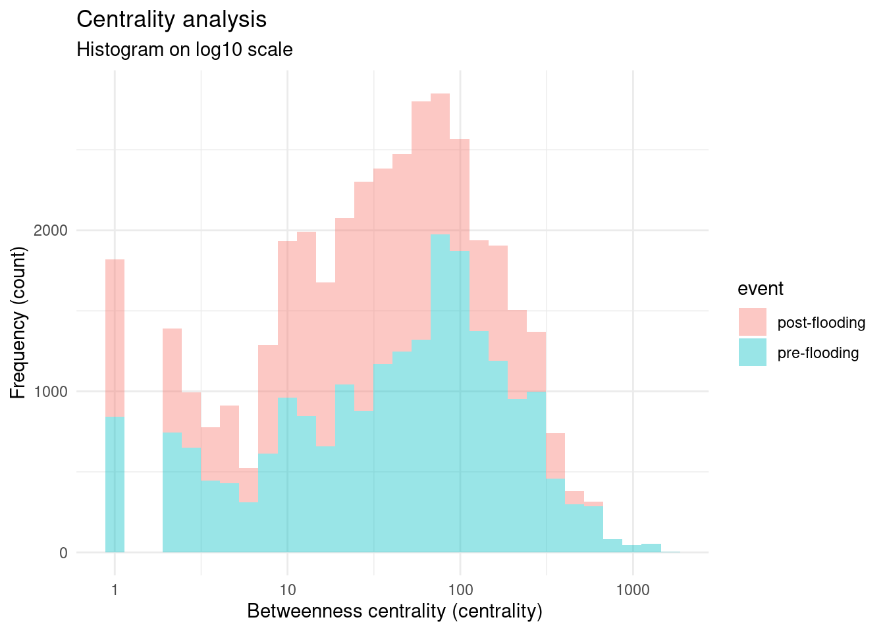
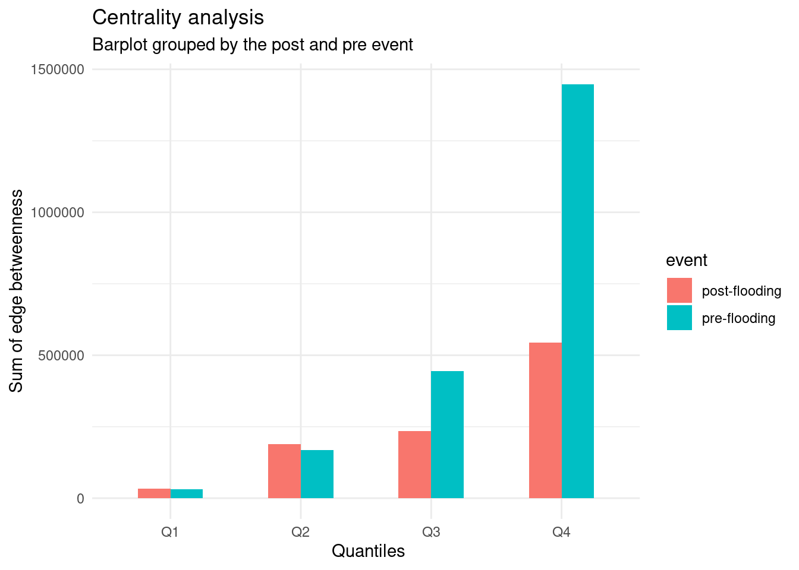
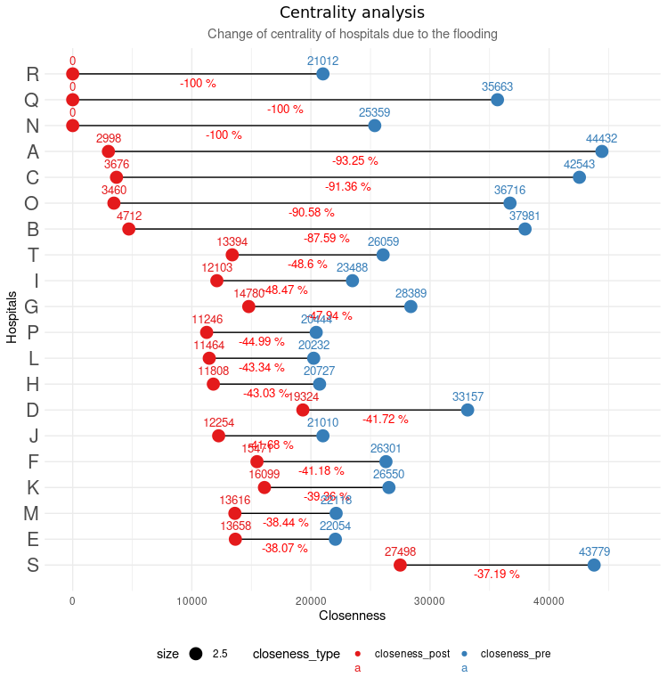

PostGIS: Result from the responsive code to import OSM
# Osmium command
osmium extract -b -51.2791,-30.1722,-50.9407,-29.8048 sul-240501.osm.pbf -o puerto_alegre_urban_center.osm.pbfKey variables: - Centrality — connectivity - Accessibility —- vulnerability-resilience
The area of interest covered 1331 km² of surface including 9 municipalities with 20 healthcare facilities. On this area, the road network included 2463 components with a total length of 9039 km. The selected component for the centrality analysis represented the 96.53% of this total, with a length of 8720 km. The transformed graph network contained 75384 target nodes, 75184 source nodes, and 175608 edges. Classified as a large settlement (European Commission. Joint Research Centre. 2023), the estimated population from the GHSl-SMOD was 2728133 with a total built up area of 147 km².
A total of 100 origin and 100 destination generated 9994 shortest paths. The initial naive approach using the regular sampling method generated these points in fields and non-populated areas, which would have skewed the representation of the population distribution. This would have resulted in increasing the centrality of roads that are less relevant to the population’s movement patterns during the flooding event. Therefore, using the weighted sampling based on the built-up areas provided a closer model representation of the flooding phenomena.
After subdividing the flooding extent and adjusting it to the Area of Interest (AoI), the flooding covered 441 km² instead of the original 7103 km². This operation allowed to create the post-flooding road network with less computing costs by only selecting the flooding extent that intersected with the AoI. This post-flooding network with a length of 1926 km included the components 21, 14 and 5187, summing up a total of 63458 vertices against the 75384 vertices from the pre-flooding network. When compared to the network before the flooding, the post-network network reduced its length by -16 % , representing a loss of -2556 km.
# Osmium command
osmium extract -b -51.2791,-30.1722,-50.9407,-29.8048 sul-240501.osm.pbf -o puerto_alegre_urban_center.osm.pbf## Crop and Reproject
## gdalwarp -te -4850853.201784615 -3737074.296348413 -4616291.881935796 -3495378.804761388 GHS_BUILT_V_E2020_GLOBE_R2023A_54009_100_V1_0.tif GHS_BUILT_V_E2020_GLOBE_R2023A_54009_100_V
## gdalwarp -t_srs "EPSG:4326" GHS_BUILT_V_E2020_GLOBE_R2023A_54009_100_V1_0_RioGrandeDoSul.tif GHS_BUILT_V_E2020_GLOBE_R2023A_4326_100_V1_0_RioGrandeDoSul.tif
pal <- mapview::mapviewPalette("mapviewTopoColors")
ghs_build <- stack("/home/ricardo/heigit_bookdown/data/GHS_BUILT_V_E2020_GLOBE_R2023A_4326_100_V1_0_RioGrandeDoSul.tif")
ghs_smod <- stack("/home/ricardo/heigit_bookdown/data/GHS_SMOD_E2020_GLOBE_R2023A_4326_1000_V2_0_RioGrandeDoSul.tif")
ghs_smod_terra <- terra::rast("/home/ricardo/heigit_bookdown/data/GHS_SMOD_E2020_GLOBE_R2023A_4326_1000_V2_0_RioGrandeDoSul.tif")
regular_sampling <- st_read("/home/ricardo/heigit_bookdown/data/random_points_snapped.geojson")
regular_sampling_100 <- sample_n(regular_sampling, size = 100)
weighted_sampling_origin <- st_read(eisenberg_connection,"weight_sampling_100_origin")
weighted_sampling_destination <- st_read(eisenberg_connection,"weight_sampling_100_destination")
nuts <- st_read(eisenberg_connection, "nuts")
weighted_sampling_origin$sample <- "origin"
weighted_sampling_destination$sample <- "destination"
weighted_sampling_both <- rbind(weighted_sampling_origin,
weighted_sampling_destination )
weighted_sampling <- weighted_sampling_both |> mutate(sample = as.factor(weighted_sampling_both$sample))
poi_hospital <- st_read(eisenberg_connection,"hospital_rs_node_v2")
m <- matrix(c(
0, 10, NA, # Values >= 0 and <= 10 become 0
10, 13, 1, # Values > 10 and <= 21 become 1
13, 29, 2, # Values > 21 and <= 29 become 2
30, 30, 3 # Values == 30 become 3
), ncol = 3, byrow = TRUE)
## Classify using the correct matrix
rc2 <- classify(ghs_smod_terra, m, include.lowest=TRUE)
rc2_factor <- as.factor(rc2)
levels(rc2_factor) <- data.frame(
ID = 1:3, # These should match the values in the classification
category = c("Rural: 10-13", "Suburban: 13-29", "Urban Center: 30")
)
category_colors <- c("#008f44","#dedb96", "#cc9152")
mapview(ghs_build[[1]],
layer.name ="Built-up volume",
col.regions = pal(100),
alpha.regions= 0.45,
hide=TRUE) +
mapview(ghs_smod[[1]],
layer.name = "Settlement classification",
col.regions = pal(100),
alpha.regions= 0.35,
hide=TRUE) +
mapview(weighted_sampling,
layer.name="Weighted samples",
zcol="sample",
col.regions=c("#2D5CA4","#00A3A0"),
hide=TRUE,
cex= 3) +
mapview()
mapview(regular_sampling_100,
color = "darkgray",
col.regions="darkgray",
cex= 3,
legend= FALSE,
hide=TRUE) +
mapview(subset(poi_hospital,
select=c("cd_cnes",
"ds_cnes",
"id",
"geom_hospital")),
layer.name = "POI - Hospitals",
color= "darkred",
col.regions="#CA2334",
popup=popupTable(poi_hospital, zcol=c("cd_cnes","ds_cnes","id"))) +
mapview(flooding,
color="darkblue",
alpha.regions= 0.5,
hide =TRUE,
layer.name="Flooding layer") +
mapview::mapview(prueba_largest_network_post,
lwd = 0.2,
color="#cb2a32",
hide = TRUE,
layer.name ="Post-flooding network") +
mapview::mapview(pre_network_largest,
color = "#00a4a4",
lwd= 0.2,
hide=TRUE,
layer.name ="Pre-flooding network") How does road connectivity change after being impacted by flooding based on connectivity metrics?
The average sum edge betweenness before the flooding was 96, being decreased to 58 after the flooding. In contrast, the flooding caused a -65 % decrease on the maximum values, reducing the sum edge betweenness from 1644 to 582. Prior to the event, the 30% of the network that extended over 579 km, accounted for 69 % of the overall connectivity adding 1448245 to the network. After the event, the upper quartile of the network, with a length of 363km, maintained 70% of the total centrality, however, it only contributed 701092 to the sum edge betweenness.
### natural breaks
#### For pre-event: 1644, 468, 142
centrality_pre$centrality_fct <- cut(centrality_pre$centrality,
breaks=c(0,142,468,1644),
labels =c("low","medium","high"),
include.lowest= TRUE,
right =FALSE)
#### natural breaks: 81, 230, 582
centrality_post$centrality_fct <- cut(centrality_post$centrality,
breaks=c(0,81,230,582),
labels =c("low","medium","high"),
include.lowest= TRUE,
right =FALSE)
###
centrality_pre_map <- mapview::mapview(centrality_pre,
zcol="centrality_fct",
lwd ="centrality",
layer.name ="Centrality Pre-Event",
popup=popupTable(centrality_pre,
zcol=c("id","centrality","bidirectid")))
centrality_post_map <- mapview::mapview(centrality_post,
zcol="centrality_fct",
lwd = "centrality",
layer.name ="Centrality Post-Event",
popup=popupTable(centrality_pre,
zcol=c("id","centrality","bidirectid")))
centrality_pre_map | centrality_post_map + mapview(flooding,
color="darkblue",
alpha.regions= 0.5,
layer.name="Flooding layer")The most central road segments were georeferenced to reveal the name of these identified critical roads. It is found that urban arteries such as Freeway Anchieta or Avenida Presidente Castello Branco lost their entire centrality after the flooding. Other roads such as Avenida Teresópolis or Avenida Manoel Elias, Jadim Leopoldina, even being affected by the flooding, only lost their centrality partially.In contrast, roads which were not used before the flooding, such as those located nearby Costa do Morro, Itacolomi or Costa do Ipiranga, were used after the flooding event. These results are shown in the table 1 and mapped in the figure 1.
library(plyr)
## Categories for pre-flooding or post-flooding
df_centrality_pre <- centrality_pre |>
sf::st_drop_geometry() |>
mutate(event = "pre-flooding")
df_centrality_post <- centrality_post |>
sf::st_drop_geometry() |>
mutate(event = "post-flooding")
#### For pre-event: 1644, 468, 142
df_centrality_pre$centrality_fct <- cut(df_centrality_pre$centrality,
breaks=c(0,142,468,1644),
labels =c("low","medium","high"),
include.lowest= TRUE,
right =FALSE)
#### natural perk: 81, 230, 582
df_centrality_post$centrality_fct <- cut(df_centrality_post$centrality,
breaks=c(0,81,230,582),
labels =c("low","medium","high"),
include.lowest= TRUE,
right =FALSE)
## Join both in one dataframe
df_centrality_both <- left_join(df_centrality_pre,
df_centrality_post,
by = 'id',
suffix=c("_pre","_post")) |> dplyr::select(c("id","bidirectid_pre","bidirectid_post","centrality_pre","centrality_post","centrality_fct_pre","centrality_fct_post","event_post","event_pre")) |>
mutate(centrality_post = replace_na(centrality_post, 0)) ## Roads covered by the flooding appeared as NA in the post-scenario, replace tha NA value for 0
## Calculate change on centrality after being impacted by flooding
df_centrality_both <- df_centrality_both |>
mutate(centrality_diff = centrality_post-centrality_pre)
### Obtain distribution using quantiles
df_centrality_both_quantiles <- quantile(df_centrality_both$centrality_diff, na.rm =TRUE)
### Filter the worst scenario, most negative values below second quartile
df_centrality_negative_outlier <- df_centrality_both |>
filter( centrality_diff <= df_centrality_both_quantiles[2])
### Join with original data to obtain again geometry
df_centrality_negative_outlier_geom <- df_centrality_negative_outlier |>
arrange(centrality_diff) |>
slice(1:1000) |>
left_join(centrality_pre, by = "id") |>
mutate(the_geom_centroid = st_centroid(the_geom),
lon = st_coordinates(the_geom_centroid)[,1],
lat = st_coordinates(the_geom_centroid)[,2])
# Obtain a subset of the 500 observations oredered by lowest values on centrality difference
df_centrality_negative_outlier_geom_unique <- df_centrality_negative_outlier_geom |>
distinct(centrality_pre, .keep_all = TRUE)
# Reverse geocoding to obtain the address based on the centroids
df_centrality_negative_outlier_distinct_address <- tidygeocoder::reverse_geocode(df_centrality_negative_outlier_geom_unique, lat=lat, lon=lon, method="osm")
## Create ID for the found addresses (97)
df_centrality_negative_outlier_distinct_address$address_number <- seq(1, 167,1)
df_centrality_negative_outlier_distinct_address$short_address <- str_extract(df_centrality_negative_outlier_distinct_address$address, "^[^,]+, [^,]+")
df_centrality_negative_outlier_distinct_address$centrality_diff_perc <- round(((df_centrality_negative_outlier_distinct_address$centrality_post - df_centrality_negative_outlier_distinct_address$centrality_pre) / df_centrality_negative_outlier_distinct_address$centrality_pre *100),2)
## DT Table
DT::datatable(subset(df_centrality_negative_outlier_distinct_address, select=c("address_number", "short_address","centrality_pre", "centrality_post","centrality_diff","centrality_diff_perc","id","source","target","the_geom")),
colnames= c("ID","Address","Pre-Centrality", "Post-Centrality","Diff-Centrality","Diff-Centrality(%)","id_1","source","target","the_geom"),
filter="top",
class='compact', rownames=FALSE, escape=FALSE, caption='Data description',
extensions=c("Buttons",'RowGroup'),
options=list(
order=list(list(5, 'desc'), list(2,'desc')), # Sort by the first column (index 5)
dom="Bfrtip",
columnDefs = list(list(visible=FALSE, targets= c(6,7,8,9))),
buttons=c("copy", "csv", "pdf"),
initComplete = JS(
"function(settings, json) {",
"$(this.api().table().header()).css({'background-color': '#d50038', 'color': '#fff'});",
"}")
)
) |>
DT::formatStyle("centrality_pre",
background=DT::styleColorBar(range(df_centrality_negative_outlier_distinct_address$centrality_pre), '#ee8b8b'),
backgroundSize='98% 88%',
backgroundRepeat='no-repeat',
backgroundPosition='center') Regarding the distribution of the centrality, the histogram on the figure 1 represented the betweenness centrality on a log10 scale on the X-axis, while the Y axis shown the frequency of occurence for both scenarios. In both scenarios, the centrality distribution exibited strong positive skewness, with most of the values concentrated at the lower values of the edge betweenness. It is observed that the frequency of mid-range centrality values between 10 and 100 increased after the flooding event, however, the tail with larger values after 1000 was no longer present. The extreme positive centrality values found only in the pre-disaster network affected the general centrality lowering the mean.
library(plyr)
# Tidy data and wrangling
centrality_post$event <- "post-flooding"
centrality_pre$event <- "pre-flooding"
centrality_both <- rbind(centrality_post[,c("id","centrality","event")] ,
centrality_pre[,c("id","centrality","event")])
mu <- plyr::ddply(centrality_both, "event", summarise, grp.mean=mean(centrality))
# Create histogram
ggplot(centrality_both, aes(x=centrality, fill=event)) +
geom_histogram(alpha=0.4,) + scale_x_log10() +
labs(title = "Centrality analysis",
subtitle= "Histogram on log10 scale",
x = " Betweenness centrality (centrality)",
y = "Frequency (count)") +
theme(plot.title=element_text(family ="bold", hjust=0.5),
plot.subtitle = element_text(colour="#626262", hjust=0.5),
legend.position='bottom') +
theme_minimal()
The following grouped bar plot illustrates the sum of the edge betweenness values classified by their quantiles for both events, before and after the flooding. The X-Axis is categorized in the four quantiles, while yhe y-axis summed up the betweenness values of these quartiles. In Both events a similar pattern is found, the roads belonging to the Q4 caused most of the edge beetweenness of the network. The 1344 km that comprised all the roads below the fourth quartile only contributed to 30% for the preflooding scenario connectivit” . Therefore, the findings shown an positive skewed distribution, where a small proportion of roads were responsible for the roads held responsible for the 69% of the centrality of the network.
df_centrality_pre <- centrality_pre |>
sf::st_drop_geometry() |>
mutate(event = "pre-flooding")
df_centrality_post <- centrality_post |>
sf::st_drop_geometry() |>
mutate(event = "post-flooding")
##
df_centrality_both_barplot <- dplyr::bind_rows(df_centrality_pre,
df_centrality_post)
### percentiles
q <- quantile(df_centrality_both_barplot$centrality)
q_pre <- quantile(
df_centrality_pre[df_centrality_pre$event == 'pre-flooding',]$centrality)
q_post <- quantile(
df_centrality_post[df_centrality_post$event == 'post-flooding',]$centrality)
### Centrality
df_centrality_both_barplot_cat <- na.omit(df_centrality_both_barplot) |>
mutate(centrality_cat=as.factor(case_when(
centrality <= q_pre[2] ~ "Q1",
centrality <= q_pre[3] ~ "Q2",
centrality <= q_pre[4] ~ "Q3",
centrality >= q_pre[4] ~ "Q4",
TRUE ~ "missing")))
## tidy data
barplot_event_cat_sum <- df_centrality_both_barplot_cat |>
dplyr::group_by(event, centrality_cat) |>
dplyr::summarise(sum_centrality = sum(centrality))
# basic plot
barplot_event_cat_sum |>
ggplot(aes(x=centrality_cat,
y=sum_centrality,
fill=event)) +
geom_col(width=0.5, position="dodge") +
labs(title = "Centrality analysis",
subtitle= "Barplot grouped by the post and pre event",
x = " Quantiles",
y = "Edge betweenness") +
theme(plot.title=element_text(family ="bold", hjust=0.5),
plot.subtitle = element_text(colour="#626262", hjust=0.5),
legend.position='bottom') +
theme_minimal()
Which healthcare facilities will be most affected by flooding based on accessibility metrics?
## Eisenberg
hospitals_betweenness_pre <- st_read(eisenberg_connection, "centrality_424_hospitals_porto_end_id_centrality")
hospitals_betweenness_post <- st_read(eisenberg_connection,"centrality_424_hospitals_porto_end_id_centrality_post")
### Locally
hospitals_betweenness_pre_local <- st_read(eisenberg_connection, Id(schema="heigit", table = "centrality_424_hospitals_porto_end_id_centrality_group"))
hospitals_betweenness_post_local <- st_read(eisenberg_connection, Id(schema="heigit", table = "centrality_424_hospitals_porto_end_id_centrality_post_group"))
hospitals_betweenness_pre_local$event <- "pre-event"
hospitals_betweenness_post_local$event <- "post-event"
## Import
hospitals_betweenness_both_long <- hospitals_betweenness_pre_local |> bind_rows(hospitals_betweenness_post_local) |> subset(select=c("cd_cnes","ds_cnes","max_centrality","event")) |> pivot_wider(
names_from = event,
values_from = max_centrality
) |> rename( betwenness_pre= `pre-event`,
betwenness_post= `post-event`)
hospitals_betweenness_both_long[is.na(hospitals_betweenness_both_long)] <- 0
## pivot
hospitals_betweenness_long <- hospitals_betweenness_both_long |>
mutate(diff_betweenness_percent =
(betwenness_post-betwenness_pre)/(betwenness_pre)*100,
diff = betwenness_post-betwenness_pre,
letter = LETTERS[1:22]) |>
arrange(letter) |>
pivot_longer(
c(betwenness_pre,betwenness_post),
names_to="betweenness_type",
values_to="betweenness_value")
hospitals_betweenness_long_pre <-
hospitals_betweenness_long |>
filter(betweenness_type == "betwenness_pre")
hospitals_betweenness_long_post <-
hospitals_betweenness_long |>
filter(betweenness_type == "betwenness_post")
##
df_labels_betweenness <- hospitals_betweenness_long |>
group_by(letter) |>
summarize(midpoint = mean(betweenness_value),
diff_betweenness_percent = first(diff_betweenness_percent))
##
p <- ggplot(hospitals_betweenness_long, aes(x=betweenness_value, y=reorder(letter, desc(diff_betweenness_percent)))) +
geom_segment(data=hospitals_betweenness_long_pre,
aes(x=betweenness_value, y = letter,
yend=hospitals_betweenness_long_post$letter, xend=hospitals_betweenness_long_post$betweenness_value)) +
geom_point(aes(x=betweenness_value, y = letter, color = betweenness_type, size=2.5)) +
geom_text(data = df_labels_betweenness, aes(x = midpoint, y = letter, label = paste0(round(diff_betweenness_percent,2), " %")),
vjust = 1.5, size = 3.5, color = "red") +
geom_text(aes(label = betweenness_value, color = betweenness_type), vjust = -1, size=3.5) + # Label the points with centrality_value
scale_color_brewer(palette = "Set1", direction = 1) +
scale_y_discrete(expand=c(0.05,0.05)) +
theme_minimal() +
labs(title = "Centrality analysis",
subtitle= "Change of centrality based on sum edge betweenness in hospitals",
y = " Hospitals",
x = "Sum Edge Betweenness") +
theme(plot.title=element_text(family ="bold", hjust=0.5),
axis.text.y = element_text(size = 16),
plot.subtitle = element_text(colour="#626262", hjust=0.5),
legend.position='bottom')
### table
df_hospitals_betweenness_both_compare <- hospitals_betweenness_both_long |>
mutate(diff_betweenness_percent =
round((betwenness_post-betwenness_pre)/(betwenness_pre)*100,2),
diff = betwenness_post-betwenness_pre,
letter = LETTERS[1:22],
ds_cnes = stringr::str_to_title(ds_cnes))
DT::datatable(subset(df_hospitals_betweenness_both_compare,
select=c("letter","cd_cnes","ds_cnes","betwenness_pre","betwenness_post","diff_betweenness_percent")),
colnames=c("ID","Code","Name","Betweenness Pre","Betweenness Post","Diff(%)"),
filter="top",
extensions="Buttons",
options=list(
dom="Bfrtip",
buttons=c("copy","csv","pdf"),
initComplete = JS(
"function(settings, json) {",
"$(this.api().table().header()).css({'background-color': '#d50038', 'color': '#fff'});",
"}")
)
) |>
DT::formatStyle("betwenness_pre",
background=DT::styleColorBar(range(df_hospitals_betweenness_both_compare$betwenness_pre),'#ee8b8b'),
backgroundSize = '98% 88%',
backgroundRepeat = 'no-repeat',
backgroundPosition = 'center') |>
DT::formatStyle("betwenness_post",
background=DT::styleColorBar(range(df_hospitals_betweenness_both_compare$betwenness_pre),'#8ba1b3'),
backgroundSize = '98% 88%',
backgroundRepeat = 'no-repeat',
backgroundPosition = 'center')
hospitals_closeness_both <- st_read(eisenberg_connection, "hospitals_closeness_both")
df_hospitals_closeness_both_compare <- hospitals_closeness_both |>
mutate(diff_closeness_percent =
round((closeness_post-closeness_pre)/(closeness_pre)*100,2),
diff = closeness_post-closeness_pre,
letter = LETTERS[1:20],
ds_cnes = stringr::str_to_title(ds_cnes)) |>
sf::st_drop_geometry()
DT::datatable(subset(df_hospitals_closeness_both_compare,
select=c("letter","cd_cnes","ds_cnes","closeness_pre","closeness_post","diff_closeness_percent")),
colnames=c("ID","Code","Name","Closeness Pre","Closeness Post","Diff(%)"),
filter="top",
extensions="Buttons",
options=list(
dom="Bfrtip",
buttons=c("copy","csv","pdf"),
initComplete = JS(
"function(settings, json) {",
"$(this.api().table().header()).css({'background-color': '#d50038', 'color': '#fff'});",
"}")
)
) |>
DT::formatStyle("closeness_pre",
background=DT::styleColorBar(range(df_hospitals_closeness_both_compare$closeness_pre),'#ee8b8b'),
backgroundSize = '98% 88%',
backgroundRepeat = 'no-repeat',
backgroundPosition = 'center') |>
DT::formatStyle("closeness_post",
background=DT::styleColorBar(range(df_hospitals_closeness_both_compare$closeness_pre),'#8ba1b3'),
backgroundSize = '98% 88%',
backgroundRepeat = 'no-repeat',
backgroundPosition = 'center')# Import he data
## hospital with closenesss values
closseness <-sf::st_read(eisenberg_connection,
layer = "clossness_hospital_porto")
closseness_df <- closseness |> arrange(ds_cnes, closeness) |>
mutate(lng=
unlist(map(geom_hospital,1)),
lat=
unlist(map(geom_hospital,2)),
closeness_norm =
(closseness$closeness - min(closseness$closeness)) / (max(closseness$closeness) - min(closseness$closeness)) * 100,
position = rank(-closeness))
## Create Color palette for visualization
pal <- colorQuantile(palette = "OrRd",closseness_df$closeness, n=4 )
## Create leaflet product
icons <- makeAwesomeIcon(
icon = 'fa-heartbeat',
iconColor = "#FFFFFF",
markerColor = "#57142c",
library = "fa"
)
leaflet(closseness_df) |>
addProviderTiles(providers$OpenStreetMap.HOT) |>
addCircles(data =closseness_df , radius = ~sqrt(closeness)*10, fillOpacity = .50, color =~pal(closeness)) |>
addAwesomeMarkers(data=closseness_df,
icon =icons,
popup= ~paste0("<b>Código CNES: </b>", cd_cnes, "<br/>",
"<b>Nome: </b>", ds_cnes, "<br/>",
"<b> Closeness</b>:", closeness, "<br/>",
"<b>Longitude: </b>", lng, "<br/>",
"<b>Posição </b>", position, "<br/>"))Where are the most critical infrastructures located for accessing health facilities to reinforce urban resilience against flooding?